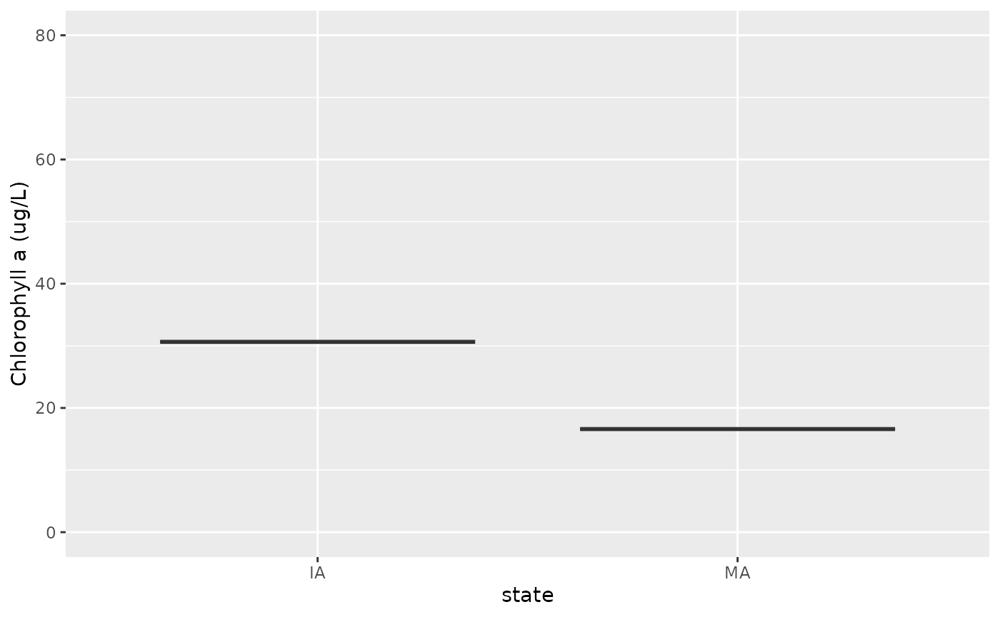

Working with LAGOSNE
Jemma Stachelek
2026-02-19
Source:vignettes/working_with_lagosne.Rmd
working_with_lagosne.RmdThe following document demonstrates use of the LAGOSNE
package with two analyses:
Before we can begin, we must load LAGOSNE data with
lagosne_load:
library(LAGOSNE)
dt <- lagosne_load()Boxplot of average chlorophyll by state
The first analysis involves constructing a boxplot of average lake
chlorophyll by state. To begin, we join the nutrient water quality table
(epi.nutr) to the location information for each lake in the
locus table. Next, we join the output to the
state table to obtain state abbreviations that correspond
to each lake. Finally, we filter the dataset to exclude any lakes that
do not fall within a state.
library(dplyr)
library(ggplot2)
lg <- left_join(dt$epi_nutr, dt$locus)
lg <- left_join(lg, dt$state)
lg <- group_by(lg, state)
lg <- filter(lg, !is.na(state))Now, the state column is of character type
so will be in alphabetical order by default. We need to cast this column
as a factor and reorder its levels from East to West in preparation for
plotting.
state_easting <- summarize(lg,
mean_easting = mean(nhd_long, na.rm = TRUE))
state_easting <- arrange(state_easting, mean_easting)
lg$state <- factor(lg$state, levels = state_easting$state)Finally, we construct a boxplot with ggplot:
ggplot(lg) +
geom_boxplot(aes(x = state, y = chla), outlier.shape = NA) +
ylim(c(0, 80)) + ylab("Chlorophyll a (ug/L)")
Map of average chlorophyll in Pennsylvania
The second analysis involves constructing a map of average lake
chlorophyll concentration in Pennsylvania lakes. To begin, we use the
maps and sf package to obtain a geographic
outline of the state.
library(maps)
library(sf)
states <- st_as_sf(map("state", plot = FALSE, fill = TRUE))
pa <- filter(states, ID == "pennsylvania")Next, we filter the output from the previous analysis to only include PA lakes and calculate mean chlorophyll for each lake:
pa_chl <- filter(lg, state == "PA")
pa_chl <- group_by(pa_chl, lagoslakeid)
pa_chl <- summarize(pa_chl,
mean_chl = mean(chla, na.rm = TRUE),
mean_long = mean(nhd_long, na.rm = TRUE),
mean_lat = mean(nhd_lat, na.rm = TRUE))
pa_chl <- filter(pa_chl, !is.na(mean_chl))Finally, we turn our data.frame into an sf geospatial
object using st_as_sf before constructing a map with
ggplot and geom_sf.